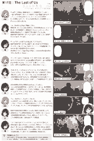

The Last of Us
答えのない選択と、失われた世界でそれでも育つ絆。
「やっぱりこの作品、最初のあのシーンの衝撃がすごいよね…。一気に世界が変わっちゃって、日常がこんなに簡単に壊れるの…？って。ここから始まるからこそ、エリーとジョエルの旅がただの冒険じゃなくて、“失ったものを抱えた二人の物語”としてずっと心に残るんだよね。」
「うん、あの導入は本当に見事だと思う。家族を失ったジョエルの心の硬さと、まだ世界を知らないエリーのまっすぐさが対照的で、最初はぎこちない二人が、少しずつ信頼を積み重ねていく過程が丁寧に描かれていますよね。会話の間や沈黙の使い方もすごく上手で、言葉にしない感情がちゃんと伝わってくるの。」
「ゲームデザインの面でも本当に良くできているのだ。弾薬や資源が常に足りない設計で、戦うか逃げるかの判断をプレイヤーに迫ってくる。だからこそ、一つ一つの戦闘が重くて、命のやり取りの緊張感が生まれるのだ。感染者のデザインや音の演出も秀逸で、Clickerのあの鳴き声は今でも耳に残ってるのだ…。」
「エリーがジョエルに冗談を言ったり、時々子どもっぽい反応を見せたりするのが好き！ あんな過酷な世界なのに、笑える瞬間があるのが救いだよね。二人でギターを弾くシーンとか、ああいう穏やかな時間があるから、余計に切なくなる…。」
「本当にそう。ジョエルにとってエリーは、失った娘の代わりではないけれど、もう一度“誰かを守りたい”と思わせてくれる存在なんだよね。そしてエリーも、ジョエルとの旅を通して世界の残酷さを知りながらも、自分の意志で生き方を選んでいく。二人の関係は、親子とも友人とも違う、とても特別なものだと思う。」
「後半の展開は本当に議論が分かれるところなのだ。ジョエルのあの選択が正しいのかどうか…。ぼくは、あの瞬間の感情としては理解できるし、だからこそ物語として強いと思うのだ。ゲームがプレイヤーに“答え”を押しつけず、考え続けさせる構成になっているのがすごいのだ。」
「うん…あのラスト、私もすごく悩んだ。もし自分がジョエルの立場だったら、同じことをしてしまうかもしれない。でもエリーの気持ちを考えると…って、ずっと考えちゃう。クリアした後も、エンディングのあの表情が忘れられないんだよね。」
「映像や音楽の演出も素晴らしいよね。荒廃した街の美しさや、自然がゆっくりと都市を飲み込んでいく風景が、セリフ以上に世界の時間の流れを感じさせる。静かなピアノのテーマも、二人の関係性を優しく包み込んでいて印象的。」
「リメイク版ではグラフィックやモーションがさらに進化して、表情の細かい変化まで伝わってくるのだ。環境ストーリーテリングも巧みで、残されたメモや建物の痕跡から、言葉にされない過去が見えてくるのも好きなのだ。プレイが終わっても、ふとあの世界のその後を想像してしまう…そんな余韻の強い作品なのだ。」
今回見えたこと
『The Last of Us』は、答えのない選択と、失われた世界でそれでも育つ絆の物語。ゲームという枠を超えて、プレイヤー自身の価値観を問い直してくる作品だった。
マンガ
